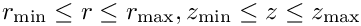
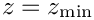
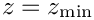

In this tutorial we re-visit the solution of the time-harmonic equations of 3D linear elasticity in cylindrical polar coordinates, using a Fourier decomposition of the solution in the azimuthal direction. The driver code is very similar to the one discussed in another tutorial – the main purpose of the current tutorial is to demonstrate the use of spatial adaptivity on unstructured meshes. Compared to the test case considered in the other tutorial we study a slightly less contrived test problem: the forced time-harmonic oscillations of a finite-length, hollow cylinder, loaded by a time-periodic pressure load on its inner surface.
The figure below shows the problem considered in this tutorial: an annular elastic body that occupies the region  is loaded by a time-harmonic pressure load acting on its inner surface (at  ). The upper and lower ends of the hollow cylinder (at  and ) are held at a fixed position.
). The upper and lower ends of the hollow cylinder (at  and ) are held at a fixed position.
#include "generic.h"
#include "time_harmonic_fourier_decomposed_linear_elasticity.h"
#include "meshes/rectangular_quadmesh.h"
#include "meshes/triangle_mesh.h"
using namespace std;
using namespace oomph;
{
std::complex<double>
Nu(0.3,0.0);
std::complex<double>
E(1.0,0.0);
std::complex<double>
Omega_sq (10.0,0.0);
const std::complex<double>
I(0.0,1.0);
const Vector<double> &n,
Vector<std::complex<double> > &result)
{
result[1] = 0.0;
result[2] = 0.0;
}
}
template<class ELEMENT>
{
public:
const unsigned &nr, const unsigned &nz,
const double &
zmin,
const double&
zmax);
void actions_before_newton_solve() {}
void actions_after_newton_solve() {}
void delete_traction_elements();
void complete_problem_setup();
void actions_before_adapt()
{
delete_traction_elements();
rebuild_global_mesh();
}
void actions_after_adapt()
{
assign_traction_elements();
rebuild_global_mesh();
complete_problem_setup();
}
void doc_solution(DocInfo& doc_info);
private:
void assign_traction_elements();
#ifdef ADAPTIVE
RefineableTriangleMesh<ELEMENT>* Bulk_mesh_pt;
#else
Mesh* Bulk_mesh_pt;
#endif
Mesh* Surface_mesh_pt;
};
template<class ELEMENT>
(const unsigned &nr, const unsigned &nz,
{
#ifdef ADAPTIVE
Vector<TriangleMeshCurveSection*> boundary_polyline_pt(4);
Vector<Vector<double> > bound_coords(2);
bound_coords[0].resize(2);
bound_coords[1].resize(2);
unsigned boundary_id=0;
boundary_polyline_pt[0]=new TriangleMeshPolyLine(bound_coords,boundary_id);
boundary_id=1;
boundary_polyline_pt[1]=new TriangleMeshPolyLine(bound_coords,boundary_id);
boundary_id=2;
boundary_polyline_pt[2]=new TriangleMeshPolyLine(bound_coords,boundary_id);
boundary_id=3;
boundary_polyline_pt[3]=new TriangleMeshPolyLine(bound_coords,boundary_id);
TriangleMeshClosedCurve* closed_curve_pt=
new TriangleMeshPolygon(boundary_polyline_pt);
TriangleMeshParameters triangle_mesh_parameters(closed_curve_pt);
double uniform_element_area=0.2;
triangle_mesh_parameters.element_area() = uniform_element_area;
Bulk_mesh_pt=new RefineableTriangleMesh<ELEMENT>(triangle_mesh_parameters);
Bulk_mesh_pt->spatial_error_estimator_pt()=new Z2ErrorEstimator;
#else
#endif
Surface_mesh_pt=new Mesh;
assign_traction_elements();
complete_problem_setup();
add_sub_mesh(Bulk_mesh_pt);
add_sub_mesh(Surface_mesh_pt);
build_global_mesh();
cout << assign_eqn_numbers() << " equations assigned" << std::endl;
}
template<class ELEMENT>
{
for (unsigned ibound=0;ibound<3;ibound=ibound+2)
{
unsigned num_nod=Bulk_mesh_pt->nboundary_node(ibound);
for (unsigned inod=0;inod<num_nod;inod++)
{
Node* nod_pt=Bulk_mesh_pt->boundary_node_pt(ibound,inod);
nod_pt->pin(0);nod_pt->pin(1);nod_pt->pin(2);
nod_pt->pin(3);nod_pt->pin(4);nod_pt->pin(5);
nod_pt->set_value(0,0.0);
nod_pt->set_value(1,0.0);
nod_pt->set_value(2,0.0);
nod_pt->set_value(3,0.0);
nod_pt->set_value(4,0.0);
nod_pt->set_value(5,0.0);
}
}
unsigned n_el = Bulk_mesh_pt->nelement();
for(unsigned e=0;e<n_el;e++)
{
ELEMENT *el_pt = dynamic_cast<ELEMENT*>(Bulk_mesh_pt->element_pt(e));
}
unsigned n_traction = Surface_mesh_pt->nelement();
for(unsigned e=0;e<n_traction;e++)
{
TimeHarmonicFourierDecomposedLinearElasticityTractionElement<ELEMENT>*
el_pt =
dynamic_cast<TimeHarmonicFourierDecomposedLinearElasticityTractionElement
<ELEMENT>* >(Surface_mesh_pt->element_pt(e));
}
}
template<class ELEMENT>
{
unsigned bound, n_neigh;
bound=3;
n_neigh = Bulk_mesh_pt->nboundary_element(bound);
for(unsigned n=0;n<n_neigh;n++)
{
FiniteElement *traction_element_pt
= new TimeHarmonicFourierDecomposedLinearElasticityTractionElement<ELEMENT>
(Bulk_mesh_pt->boundary_element_pt(bound,n),
Bulk_mesh_pt->face_index_at_boundary(bound,n));
Surface_mesh_pt->add_element_pt(traction_element_pt);
}
}
template<class ELEMENT>
{
unsigned n_element = Surface_mesh_pt->nelement();
for(unsigned e=0;e<n_element;e++)
{
delete Surface_mesh_pt->element_pt(e);
}
Surface_mesh_pt->flush_element_and_node_storage();
}
template<class ELEMENT>
{
ofstream some_file;
char filename[100];
unsigned npts=5;
sprintf(filename,"%s/soln.dat",doc_info.directory().c_str());
some_file.open(filename);
Bulk_mesh_pt->output(some_file,npts);
some_file.close();
sprintf(filename,"%s/norm.dat",doc_info.directory().c_str());
some_file.open(filename);
double norm=0.0;
unsigned nel=Bulk_mesh_pt->nelement();
for (unsigned e=0;e<nel;e++)
{
double el_norm=0.0;
Bulk_mesh_pt->compute_norm(el_norm);
norm+=el_norm;
}
some_file << norm << std::endl;
}
int main(
int argc,
char* argv[])
{
unsigned nr=10;
DocInfo doc_info;
doc_info.set_directory("RESLT");
#ifdef ADAPTIVE
<ProjectableTimeHarmonicFourierDecomposedLinearElasticityElement
<TTimeHarmonicFourierDecomposedLinearElasticityElement<3> > >
unsigned max_adapt=3;
problem.newton_solve(max_adapt);
#else
<QTimeHarmonicFourierDecomposedLinearElasticityElement<3> >
problem.newton_solve();
#endif
problem.doc_solution(doc_info);
}
Class to validate time harmonic linear elasticity (Fourier decomposed)
FourierDecomposedTimeHarmonicLinearElasticityProblem(const unsigned &nr, const unsigned &nz, const double &rmin, const double &rmax, const double &zmin, const double &zmax)
Constructor: Pass number of elements in r and z directions and boundary locations.
void assign_traction_elements()
Allocate traction elements on the bottom surface.
void delete_traction_elements()
Delete traction elements.
void complete_problem_setup()
Helper function to complete problem setup.
void doc_solution(DocInfo &doc_info)
Doc the solution.
int main(int argc, char *argv[])
Driver code.
Namespace for global parameters.
double Lz
Length of domain in z-direction.
const std::complex< double > I(0.0, 1.0)
Define the imaginary unit.
double Lr
Length of domain in r direction.
void boundary_traction(const Vector< double > &x, const Vector< double > &n, Vector< std::complex< double > > &result)
The traction function at r=rmin: (t_r, t_z, t_theta)
std::complex< double > Nu(0.3, 0.05)
Define Poisson's ratio Nu.
std::complex< double > Omega_sq(10.0, 5.0)
Define the non-dimensional square angular frequency of time-harmonic motion.
std::complex< double > E(1.0, 0.01)
Define the non-dimensional Young's modulus.
int Fourier_wavenumber
Define Fourier wavenumber.